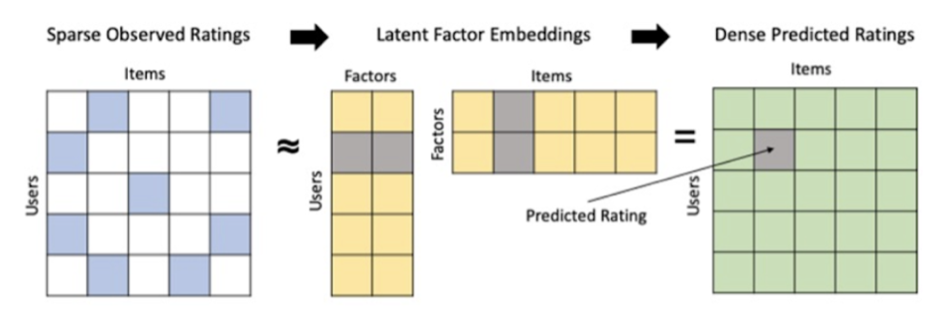
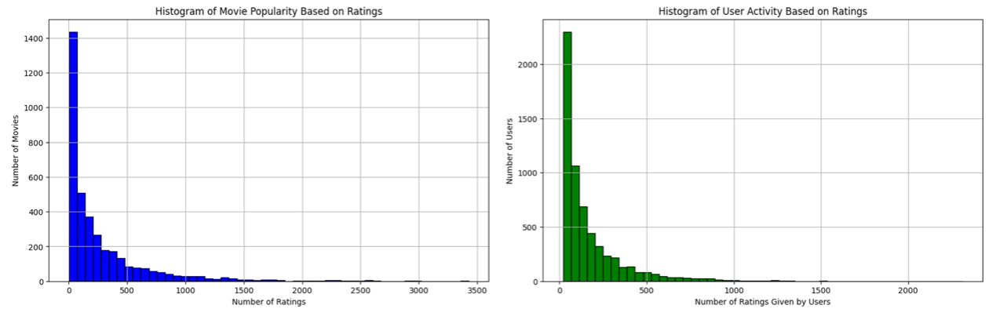
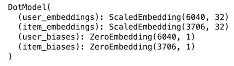
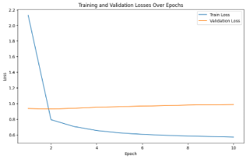
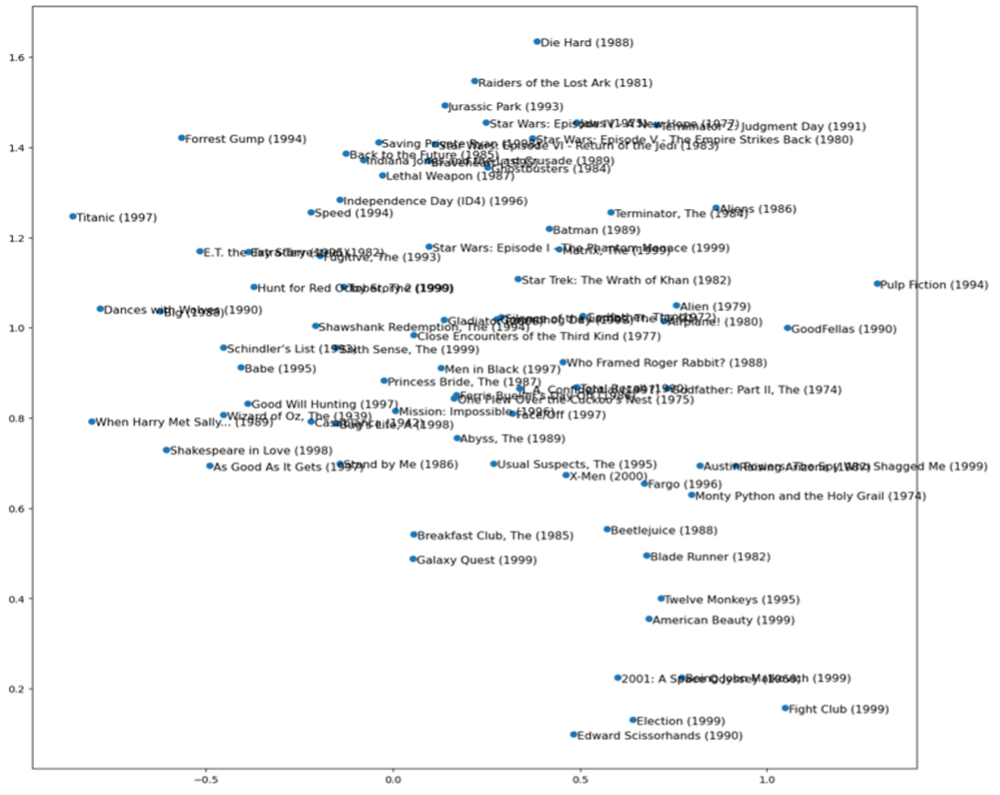

Enhancing User Experience through Collaborative Filtering
Python – Google Colab
ABSTRACT
The proliferation of digital content necessitates advanced recommender systems to enhance user experience through personalized suggestions. Collaborative filtering, a method reliant on user preference patterns rather than item characteristics, offers a solution by predicting user behavior based on historical data. This project applies matrix factorization, a collaborative filtering technique, to the MovieLens 1M dataset to develop an explicit feedback recommender system. By analyzing user-item-rating triplets, the project aims to create predictive models that forecast user ratings for unviewed content, driving enhanced personalization and user engagement on digital platforms.
Objectives
• To understand the dynamics of user preferences in online content consumption.
• To develop a matrix factorization model to predict user ratings for movies in the MovieLens dataset.
• To evaluate the accuracy of the recommender system in forecasting user preferences.
• To explore the potential of collaborative filtering in various digital service platforms beyond movie recommendations.
Methodology
• Data Processing: Cleaning and preparing the data for analysis, ensuring the integrity of user-item interactions.
• Model Development: Implementing matrix factorization techniques to uncover latent factors from user ratings.
- Start with user-item-rating triplets, conveying the information that user i gave some item j rating r.
- Represent both users and items as high-dimensional vectors of numbers. For example, a user could be represented by [0.3, -1.2, 0.5] and an item by [1.0, -0.3, -0.6].
- The representations should be chosen so that, when we multiplied together (via dot products), we can recover the original ratings.
- The utility of the model then is derived from the fact that if we multiply the user vector of a user with the item vector of some item they have not rated, we hope to obtain a predication for the rating they would have given to it had they seen it.

• Model Training: Adjusting hyperparameters and training the model to fit the dataset.
• Model Evaluation: Testing the model against a subset of data to evaluate predictive accuracy and performance.
• Prediction for New User: Creating a new user, predict the ratings this user would give to other movies based on my own past movie ratings, and compare it with my own movie preferences.
• Movie Valuation: Predicting the value of movies based on the predicted ratings.
Expected Outcome
• A functional matrix factorization model capable of providing personalized content recommendations.
• A comparative analysis of the model's performance against baseline recommendation algorithms.
• Insights into latent factors that significantly influence user preferences.
• A foundation for implementing collaborative filtering in diverse digital platforms, potentially leading to improved user satisfaction and engagement.
• Recommendations for content providers on leveraging user data to optimize service offerings.
DATA PROCESSING
Overview
I first took a look at the histogram of movie popularity and user activity based on rating in the train data. From the data visualization we can tell that most movies in Netflix only have small number of ratings (smaller than 500 ratings), and most users do not frequently rate for movies (smaller than 500 ratings). Then I computed the average ratings for every movie and find the top 20 highly rated movies and I found that they are not quite popular, which indicated that we can not evaluate future movies’ ratings based on the average past ratings because they may only have few ratings which are pretty high.

Data Preparation
I split the data in training (80%), validation (10%) and test (10%) sets. We see that a few movies in the test data are not rated in the train set. For those movies, it is hard to predict their ratings accurately.
Then I construct 3 tensors containing the user_num, item_num and rating for the training, validation, testing set seperately. All tensors have the same shape so that train_user_num[i] watched train_item_num[i] and gave a rating of train_rating[i].
MODEL DEVELOPMENT
Embedding Module
Now, we define the Model_dot Class which composed of a 4 embedding layers:
- a (num_users x latent_dim) embedding layer to represent users,
- a (num_items x latent_dim) embedding layer to represent items,
- a (num_users x 1) embedding layer to represent user biases, and
- a (num_items x 1) embedding layer to represent item biases.

Factorization Model
Now we define Factorization Model class that allows us to train and evaluate the explicit factorization models.
- The fit function should take as argument a dataloader for the training and a dataloader for the validation. At the end of each epoch, it runs the test method on the validation set and prints both the loss on the training set and on the validation set to see if we are overfitting.
- Weight decay, or L2 regularization, consists in adding to your loss function the sum of all the weights squared. When we compute the gradients, it will add a contribution to them that will encourage the weights to be as small as possible.
MODEL TRAINING
I train the model and plot the train losses and valid losses over epochs. At the third epoch, I stop the training, because the following trainings will decrease the training loss but increase the validation loss, which is a sign for overfitting. The test RMSE is about 0.99 and the test MAE is about 0.76.

I also try different parameters and here is the result:
|
Embedding_dim |
n_iter |
Learning_rate |
L2 |
RMSE |
MAE |
|
32 |
10 |
1e-2 |
0 |
0.992773 |
0.764479 |
|
50 |
5 |
0.005 |
0 |
0.925936 |
0.672455 |
|
8 |
60 |
0.001 |
0 |
0.933407 |
0.679689 |
MODEL EVALUATION
Interpreting Biases
To interpret the biases, I rank the movies according to their bias and print the Top 10 movies with highest biases. They are:
- ['Shawshank Redemption, The (1994)', 0.93047535]
- ['Star Wars: Episode IV - A New Hope (1977)', 0.90628374]
- ['Raiders of the Lost Ark (1981)', 0.8904129]
- ['Sixth Sense, The (1999)', 0.88602823]
- ["Schindler's List (1993)", 0.8849474]
- ['Godfather, The (1972)', 0.86447656]
- ['Usual Suspects, The (1995)', 0.84592587]
- ['Wrong Trousers, The (1993)', 0.80962205]
- ['Rear Window (1954)', 0.7753089]
- ['Silence of the Lambs, The (1991)', 0.7645593]
It means that for each of these above movies, even when a user is NOT well matched to its latent factors (which, as we will see in a moment, tend to represent things like level of action, age of movie, and so forth), they still generally like it. We could have simply sorted the movies directly by their average rating, but looking at the learned bias tells us something much more interesting. It tells us not just whether a movie is of a kind that people tend to enjoy watching, but that people tend to like watching it even if it is not of a kind that they normally enjoy. For instance, even if you don't normally enjoy horror thriller movies, you might enjoy Silence of the Lambs!
PCA of Embeddings
It is not quite so easy to directly interpret the embedding matrices. There are just too many factors for a human to look at. But principal component analysis (PCA) can pull out the most important underlying directions in such a matrix. We can visualize the movie embeddings based on two of the strongest PCA components.

The movies that share similar attributes are close to each other. For example, "Star Wars: Episode V - The Empire Strikes Back (1980)" and "Raiders of the Lost Ark (1981)" likely share several attributes, such as being adventure films, directed by filmmakers who were part of the movie brat generation (George Lucas and Steven Spielberg, respectively), and both being major blockbusters of the early 1980s. On the other hand, films like "Schindler's List (1993)" and "The Shawshank Redemption (1994)" are also close to each other and may share attributes such as being critically acclaimed dramas released in the early 1990s, possibly sharing similar themes of human endurance and the triumph of the spirit.
PREDICTION FOR NEW USER
Now that we have successfully trained a model, let's see how to deal with the situation where we have a new user. We can utilize the learned movie embedding vectors to estimate new users' embedding vector, based on a few ratings from them. You may have noticed that when you sign up for services such as Pandora and Netflix, they tend to ask you a few questions about what movie or music you like; this is how they come up with your initial collaborative filtering recommendations. To mimic the situation, I give 40 ratings between 1-5 to the movies that I watched before among the mostly rated movies. I compute my own embedding vector my_emb_np and my_emb_bias by running an ordinary least squares with L_2 regularization based on your ratings and the previously computed movie embedding vectors. In other words, item_emb_np is the co-variate and my own 40 ratings are the response. Then I compute the predicted ratings for all movies using my embedding vectors and biases, together with the movie embedding vectors and biases. Finally we can calculate the predicted ratings for other movies, which are quite align with my preference.
MOVIE EVALUATION
The rating data provided the company like Netflix information about the value of a movie that was not available to movie production studios. The collaborative filting algorithm allows Netflix to accurately value the content in a data-driven manner. For example, if Netflix were offered the opportunity to license Toy Story (1995), it would need to provide Disney an initial quote of the license fee. Traditional methods suggest looking at box office returns of Toy Story franchise and projecting the potential value of the film.
In this following, we will explore a novel approach to determine the valuation of a movie based on the predicted ratings. We make the following simplifying assumptions (Note that these assumptions can be certainly relaxed with more complicated procedures and data):
• Netflix are focusing on the top 1000 active users and 1000 popular movies (with the most number of observed ratings). In other words, in the following movie valuation calculation, we just consider the top 1000 active users and 1000 popular movies, disregarding the rest.
• For each user, the total amount of viewing time is proportional to the number of observed ratings. In other words, more active users spend more time on Netflix;
• For each given user, the viewing time across different movies follow a Zipf's law, that is
Viewtime of movie 𝑖 ∝ 1 / rank of 𝑖
Here the rank of 𝑖 is determined by sorting the predicted rating of movie 𝑖 by the user in descending order. In other words, the user spend less time on watching movies with lower ratings.
• Netflix has a fixed total budget of 1 Billion dollars to license the content;
• Netflix estimates the value of a movie based on the expected share of customer viewing time of the movie on its platform:
Value of a movie 𝑖 = View time of movie 𝑖 of all users / Total view time of all users × Total content license budget
Therefore, we can get the Top 10 most valued movies:
Star Wars: Episode IV - A New Hope (1977) 2.095169e+07
American Beauty (1999) 1.916395e+07
Godfather, The (1972) 1.846726e+07
Schindler's List (1993)1.700484e+07
Citizen Kane (1941) 1.634564e+07
Pulp Fiction (1994) 1.553615e+07
Seven Samurai (The Magnificent Seven) (1954) 1.501116e+07
Casablanca (1942) 1.445230e+07
Raiders of the Lost Ark (1981) 1.437625e+07
Wizard of Oz, The (1939) 1.276394e+07
The movies that are top 30 rated but not in top 30 valued are
'Back to the Future (1985)',
'Braveheart (1995)',
'E.T. the Extra-Terrestrial (1982)',
'Ghostbusters (1984)',
'Groundhog Day (1993)',
'Jurassic Park (1993)',
'L.A. Confidential (1997)',
'Men in Black (1997)',
'Shakespeare in Love (1998)',
'Star Wars: Episode I - The Phantom Menace (1999)',
'Star Wars: Episode VI - Return of the Jedi (1983)',
'Terminator 2: Judgment Day (1991)',
'Terminator, The (1984)',
'Toy Story (1995)'
The above movie valuation approach takes into account both the popularity of the movies and the ratings of the movies. We see that some movies are very popular, but does not have a high rating. For example, Toy Story (1995) is amount the top 30 most rated movies (with 2077 observed ratings), but its average predicted rating is around 4.05. On the other hand, Seven Samurai (The Magnificent Seven) (1954) is not the top 30 most rated movies. Only 628 users rated this movie, but its predicted rating is around 4.44. I guess that partially explains why this movie has been remade several times. See the most recent remake in 2016.
However, we should not take the above movie valuation for granted. It definitely has many issues, for example, does not take into account how recent the movies are made. In practice Netflix has much rich data about user view time, so it can produce much better movie valuation. Nevertheless, through this simple analysis, we can see how the recommender systems provides a promising, new way for content valuation.